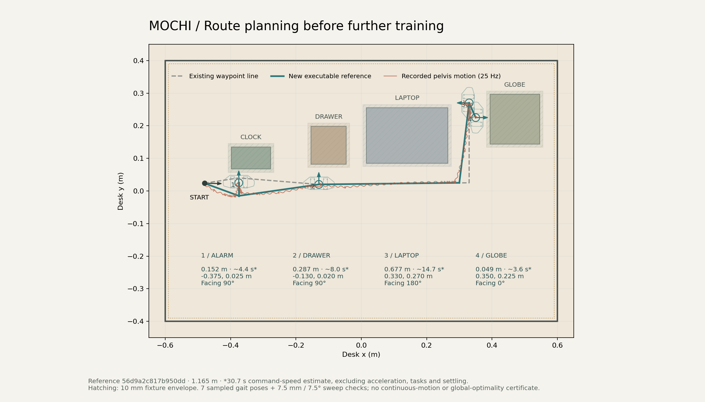

Tracking costs more than the line suggests.
The new follower keeps final alignment active once it starts and measures stopping drift. The native gait network, balance and arm IK are fixed.
PLAN → FOLLOW → VERIFY → TRAIN
A reference path on the actual desk, with body clearance and task-facing directions.
This page tests fixed control before further model training.
Loading the route study…
THE CONTROL REFERENCE
Teal is the reference consumed by control. Rust is recorded pelvis motion, including drift during tasks. Arrows show the task-facing direction. The table measures walking intervals separately.
Route coordinates and version ↗
This comparison changes the route and fixed control. It does not measure a gain from Tinker weights. Both episodes preserve physical state through the four tasks; failed episodes stop where they failed.
CALIBRATION RESULTS / ALL ATTEMPTS
| Scenario / controller | Arrivals | Tasks | Walking time | Pelvis path | Arrival error | Fall |
|---|
Calibration 19000 at 49.74956 simulated seconds. These are rendered trajectory frames, not camera observations.
The new follower keeps final alignment active once it starts and measures stopping drift. The native gait network, balance and arm IK are fixed.
The planned comparison holds the new route and observation interface fixed while changing model weights. Checkpoints are extra 0, 8, 16, 32 and 64 updates after the 96-update parent.
Bounded training plan ↗Small fixed-layout simulation calibration. No new motor-gait training, test-set result or hardware claim.